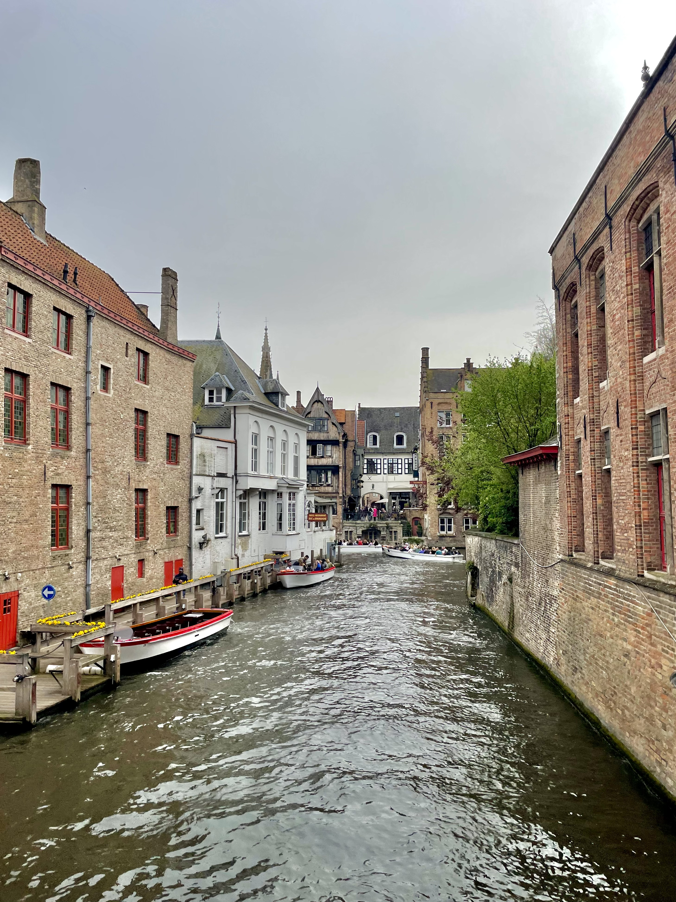
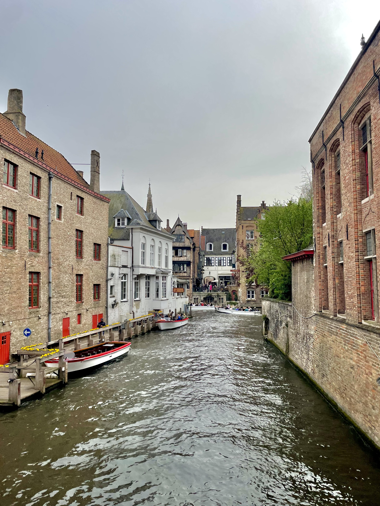

April 2024
My Trip to Belgium
 



I went to Belgium with my friend Andie in April 2024. We spent a few days in Brussels and a day in Bruges. I had never been to Belgium before, so I was really excited to explore the culture, food, and sights. We had the best time exploring the city, shopping around, trying all the food. Andie is especially talented at making itinerary plans, so we had a lot to do in a short amount of time. We spent a lot of time walking around the city, which was so beautiful. The architecture is stunning and the city is so walkable. I loved how many parks there were to relax in, and how many cute cafes there were to stop in for a coffee or Belgian fries.
Where to Stay in Brussels
Our hostel in Brussels was awesome! It was walkable to anywhere in the city center and super nice for the price. Also very social with a bar downstairs.
You can find more information about Meininger Bruxelles hostel here!
What to Do in Brussels
Eat, eat, eat!
Belgian is known for their fries, chocolate, and waffles. We tried all three and they did not disappoint. Also, definitely try out Noordzee to-go seafood. It was the perfect snack and so so delicious.
Visit Manneken Pis
A tourist attraction worth a visit. Manneken Pis is a small bronze statue of a boy peeing into a fountain. It’s a quirky symbol of Brussels and has a lot of history behind it. The statue is often dressed in different costumes, and you can visit all of his outfits in the museum up the road free of charge
Shop vintage stores
Brussels is packed with thrift stores and fun vintage shops. We loved exploring the Marolles district, which is known for its antique shops and flea markets.
Walk around the park
Brussels castle is situated directly next to a lovely park and near the museum as well where you can see a great view of the city. We strolled around here and felt right at home people watching and enjoying the shade.
Experience the nightlife
Brussels has an awesome nightlife district called Delirium Village. They had great music, great drinks, over 2000 types of beer, and hilarious characters. Definitely worth visiting for a night.
Go to Bruges
Bruges is a small town just a bus ride away from Brussels that we had to visit. It's medieval architecture was so charming and gave the city so much character. We walked around, took a canal tour, had some beers and waffles, and just took in the sights.
Documenting the trip
Final Thoughts
I loved our trip to Belgium. It was a great place to visit for a long weekend, and I loved how walkable the cities were. The food was amazing and there was so much to see and do. Definitely one of my favorite trips I took while abroad.